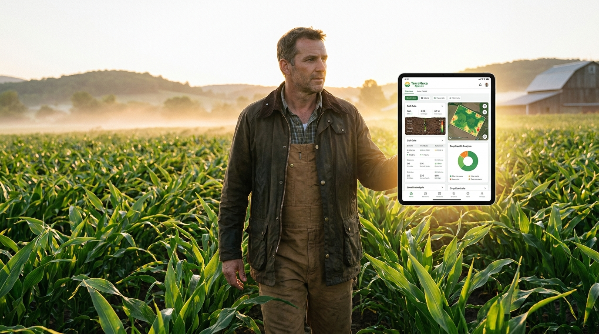
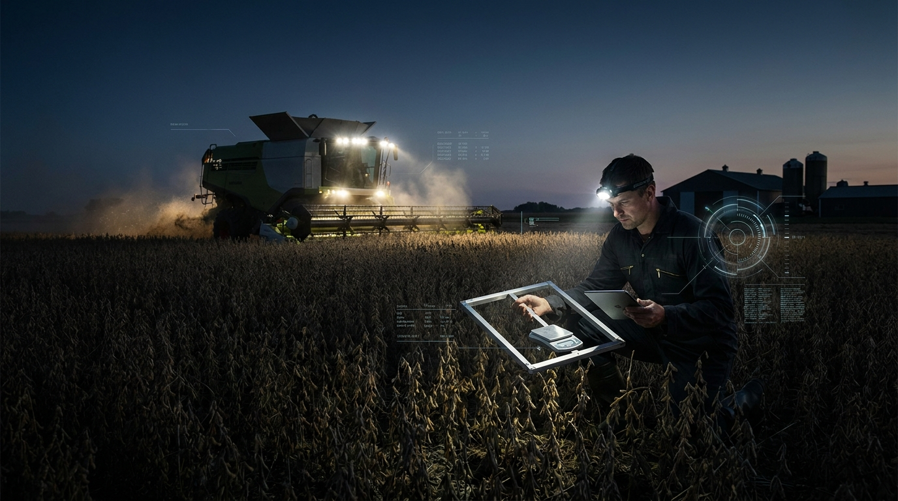
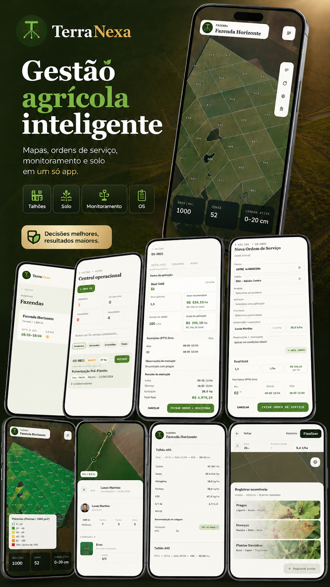
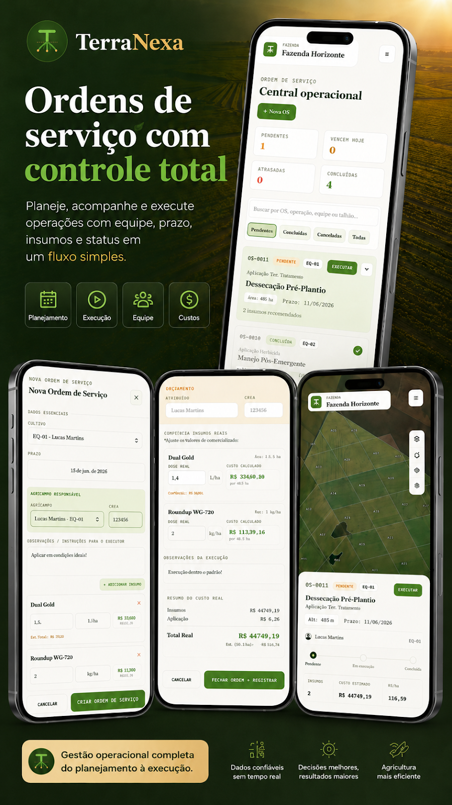
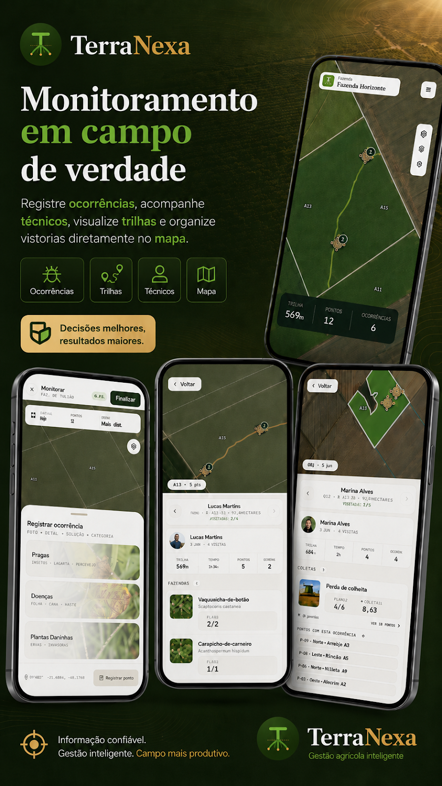
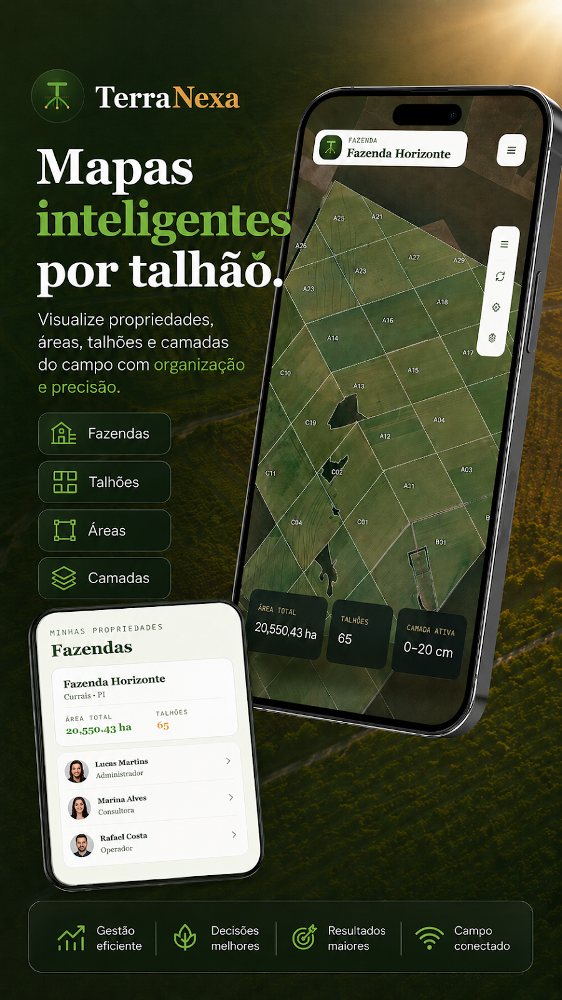
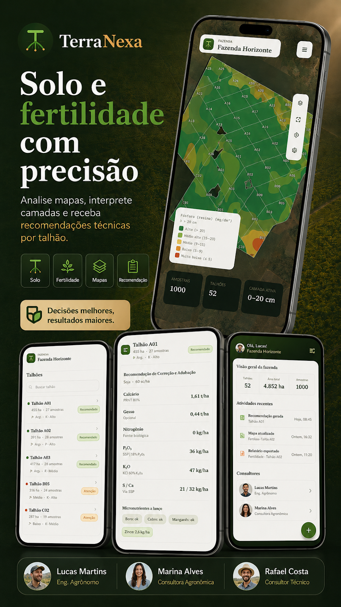
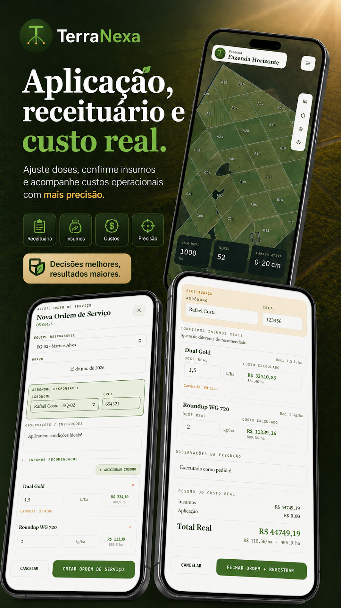
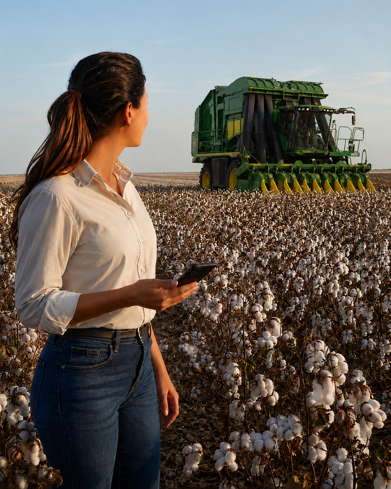

Saúde da safra
94,2%
2,4% acima do ciclo anterior

Plataforma agrotech integrada
Mapas, ordens de serviço, monitoramento e solo em um só app. Controle a operação e decida com dados em tempo real.
3 ordens exigem atenção
Do campo ao controle
A TerraNexa conecta dados de campo, equipe, custos e recomendações agronômicas. Menos planilhas dispersas. Mais decisão com contexto.

Plataforma completa
Módulos conectados, dados consistentes e uma experiência feita para a rotina do campo.
Mapa, áreas, culturas, safras e histórico por propriedade.
Explorar módulo →Planejamento, execução, prazo, equipe, insumos e custo real.
Explorar módulo →Análises, mapas de fertilidade e recomendações técnicas.
Explorar módulo →Ocorrências, trilhas, técnicos, vistorias e evidências.
Explorar módulo →Produto em ação






Interface pensada para desktop e mobile, com continuidade entre escritório e campo.
Gestão que gera resultado

Pronto para transformar sua gestão?
Conheça a plataforma em uma demonstração orientada à sua operação.